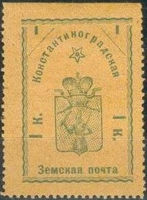
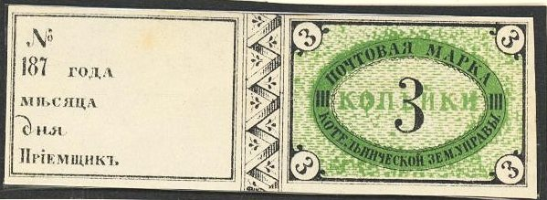
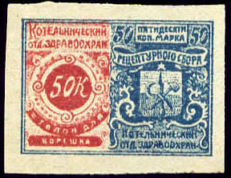
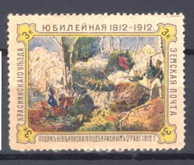
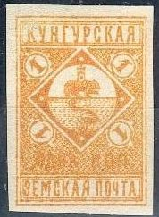

Return To Catalogue - Go to Zemstvos overview - Russia
Note: on my website many of the
pictures can not be seen! They are of course present in the
catalogue;
contact me if you want to purchase it.

1 k green on yellow 3 k green on red 6 k green on green 10 k green on blue
Besides the 6 k tete-beche pair, I've also seen a tete-beche pair of the 10 k stamp.
1 k green 2 k blue 3 k red 6 k blue 10 k lilac 30 k brown

2 k blue (3 types)
There are two crosses above and below the value in one type, in another type there are flowers instead of crosses.
(Reduced sizes)
3 k black on blue (value in a circle, rare) 3 k black on yellow (value in a circle, rare) 3 k black on orange (1870, value in an ellipse) 3 k black and yellow (1870) 3 k black and blue (1870) With number in ellipse (1871)

(image obtained with the help of Bill Claghorn)
3 k black and green 3 k black and yellow 3 k black and orange 3 k black and violet 3 k black and blue 3 k balck and grey
3 k bronze 3 k black (1895)
(Sorry, no picture available yet)
5 k blue (imperforate or perforated)

5 k black on blue


2 k lilac 2 k red (1911) 5 k blue


2 k brown 5 k blue (exists imperforated)
Surcharged, examples:
(images thanks to Bill Claghorn)


3 k bronze

3 k bronze
1870 Arms
3 k blue
1893 Arms, perforated


2 k red (exists imperforate; two slightly different designs)
2 k red
3 k red
3 k blue
3 k black and red 3 k black and green 3 k black

These stamps represent a battle during the retreat of Napoleon from Moscow in 1812.


3 k orange 3 k brown 3 k blue 3 k black, red and blue (1902)
3 k black, grey and blue 3 k black, yellow and grey 3 k black, brown and blue 3 k black, brown and grey 3 k black, yellow and blue

1 k black on blue 2 k black on red


1 k yellow 1 k blue (1895) 2 k green 2 k red (1895) 5 k blue 10 k red


1 k orange 2 k green
1 k green 2 k red
1 k blue 2 k red

5 k violet


(reduced size)
3 k brown, orange and green (1898) 3 k brown and green (1904) 5 k black, red and blue (2 types)
{kind=link}